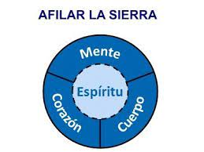
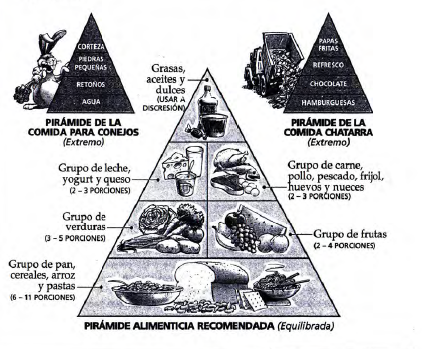

Te sientes desequilibrado, tenso o vacío interiormente? Si es así te
encantar~ ~l Hábito 7, porque fue especialmente diseñado para a~udarte
a lidiar con estos problemas. ¿Por qué lo llamamos "Afilar 1 sI·e rra "?· 1m agm. a que sales a pasear al bosque, cuando te encuentras cona
un tipo que está aserrando furiosamente un árbol.
-¿Qué estás haciendo? -preguntas.
-Estoy talando un árbol -es la brusca respuesta.
-¿Desde hace cuánto tiempo?
-Hasta ahora, cuatro horas, pero estoy avanzando mucho --dice,
con el sudor resbalando por su barbilla.
-Tu sierra parece muy desgastada -respondes-. ¿Por qué no haces
una pausa y la afilas?
-No puedo, tonto. Estoy demasiado ocupado aserrando.
Todos sabemos quién es el verdadero tonto en esta situación ·verd
a d:? s· 1 · ,
<- I e tipo se tomara una pausa de 15 minutos para afilar la sierra,
posiblemente terminaría en una tercera parte del tiempo.
¿Por qué el equilibrio es tan importante? Porque lo que hagas en una dimensión de la vida afectará a las otras tres. Piénsalo. Si una· de las llantas de tu coche no está balanceada, las cuatro se desgastarán de forma dispareja y no sólo la que no está balanceada. Es difícil ser amistoso (corazón) cuando estás exhausto (cuerpo). También funciona al revés. Si te sientes motivado y afinado contigo mismo (alma), es más fácil concentrarte en tus estudios (mente) y ser más amistoso (corazón).
Al igual que un coche, necesitas hacer regularmente afinaciones y cambios de aceite. Necesitas pausas para rejuvenecer lo mejor que tienes para ti: ¡tú mismo! Necesitas tiempo para descansar y aflojarte, tiempo de ofrecerte un poco de cuidados amorosos. En esto consiste Afilar la Sierra.
En realidad, este cuerpo tan cambiante es en realidad una máquina maravillosa. Puedes manejarla con cuidado, o puedes abusar de ella. Puedes controlarla o permitir que te controle. En pocas palabras, tu cuerpo es una herramienta y si cuidas bien de ella, te funcionará bien. A continuación ofrezco una lista de las diez formas en que los adolescentes pueden mantener afilados sus cuerpos físicos:
Hay mucha verdad en la expresión "dime qué comes y te diré quién eres". No soy un experto en nutrición, pero descubrí dos reglas sencillas que puedes tener en mente. Primera regla: escucha a tu cuerpo. Pon mucha atención a cómo te hacen sentir los distintos alimentos, y a partir de ello desarrolla tu propio criterio para com~r. Cada persona responde de manera distinta a los alimentos. Por ejemplo, cada vez que como mucho antes de acostarme, me siento terriblemente mal en la mañana.
